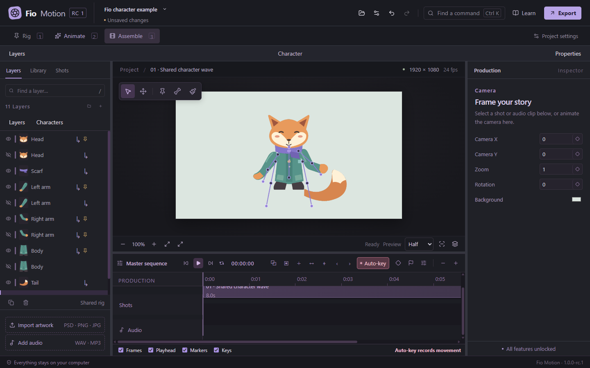

01 — RIGEverything
Everything
connected.
Keep your drawing in separate layers. Connect pieces to layers, pins or bones, or use the humanoid assistant to set up a character.
Transparent PNG · Layered PSD · Shared skeletons
You’ve drawn a character.
Now give it a personality.
Connect your artwork, shape a pose and find the rhythm. An animation studio that lives on your computer.
__RELEASE_BADGE__ · Free, fully unlocked
01 / SEE IT MOVE
A short look at assembling a character, shaping its movement and getting the result out of the editor.
02 / YOUR WORKSPACE
Keep your drawing in separate layers. Connect pieces to layers, pins or bones, or use the humanoid assistant to set up a character.
Transparent PNG · Layered PSD · Shared skeletonsPose a hand, add another keyframe and play. Smooth easing gets you started; timing curves let you decide exactly how a movement feels.
Puppet pins · Bones · Curves · Reusable motion
Arrange shots, bring in audio and add camera moves. Export a video to share, or transparent PNG frames for your next edit.
Shots · WAV / MP3 · MP4 · Transparent PNG
03 / A CLOSER LOOK
Three workspaces, one project. Panel layouts adapt to you, and the canvas keeps your project’s proportions.

Your shape.16:9, 4:3, square, portrait or custom dimensions.
Your language.English, Português, Español, Français, Deutsch, 日本語, 简体中文.
Your files.Offline projects. Optional update checks. No account.
04 / GET FIO MOTION
Windows 11 x64. Free, with every feature unlocked.
05 / A FEW ANSWERS
The distributed builds target Windows 11 x64. A WebGL2-capable GPU is needed for the editor. Clean Windows 11 qualification and reference-hardware performance testing are still pending; see the release notes for measurements and limitations.
Editing and exporting work offline. Update checks are optional. You only need a connection to download the app or check for a newer release.
PNG, JPEG, WebP and supported 8-bit RGB PSD files. Transparent PNG pieces are a straightforward way to begin. Supported PSD layers, names, groups and offsets are preserved; unsupported Photoshop features are reported. Read the compatibility notes.
Yes. You own your artwork and animation. Fio Motion’s original code is MIT-licensed, which also permits commercial use and modification, subject to its notice requirements. Third-party components keep their own licenses.
Projects use the .puppet format. Supported projects from earlier betas migrate without automatically converting their connected rigs into the new shared skeleton. Keep the artwork folder alongside its project.
__SIGNING_FAQ__ Use downloads from the official repository and compare them with the supplied SHA256 checksums.
Report a reproducible issue, try the example, or contribute code. Include the app version, Windows version and steps to reproduce. Keep private artwork out of public reports.